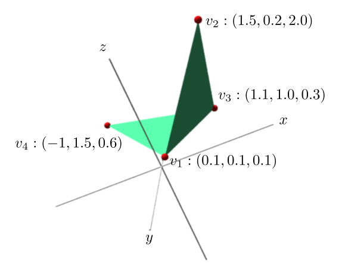
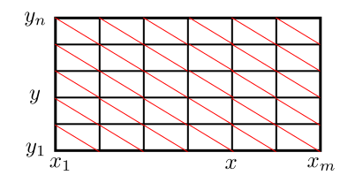
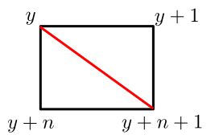
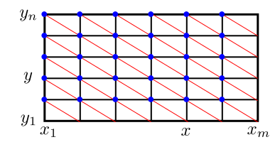

I often create 3D models (mainly mathematical ones) for teaching
purposes. My favourite tool for
this is Art of
Illusion. While it takes care of the artistic aspects
(texture, lighting etc), sometimes I need complicated 3D objects
that are described more easily via mathematics than via GUI. For
such requirements I create an .obj file, which is a
just an ASCII file listing all the vertices and faces. Then I
import this file into Art of Illusion, and add the fine polish.
One can use J to produce the .obj file easily. I
shall illustrate with the example of making a surface of a
function $F(x,y).$ The aim is to build a tool that will let
me produce the .obj file for any given function and
ranges.
v 0.1 0.1 0.1
v 1.5 0.2 2.0
v 1.1 1.0 0.3
v -1 1.5 0.6
f 1 2 3
f 1 3 4
This describes the object:

It consists of 6 lines (the blank line is for the ease of human
reading, and is ignored by the computer). The first 4 lines
start with the letter v. They specify vertices. The
three numbers following the v gives
the $x$, $y$ and $z$ coordinates of that vertex.
The vertices are numbered 1 onwards according to the order of listing.
Each line starting with an f specifies a
(triangular) face. The three numbers are the indices of the
three vertices.
///
We want to write a dyad s that will take two inputs,
the grid of $x$-values and the grid of $y$-values, and
produce the .obj file for the surface of a
function $F(x,y)$ (which we assume is already
available). Here we are assuming that we shall always use the
name F for the target function. Thus, a typical
session to create the surface of $F(x,y)=\sin(x)\cos(y)$
could look like:
F=. 4 : '(sin x)*cos y'
x=. 10*(i: 100) %100
(x s x) fw <'test.obj' NB. Using the same grid for x and y
Here we have assumed that sin and cos
are defined as usual, and that fw means "file
write", ie,
Let's chalk out the structure of the surface in terms of vertices
and faces. We want all the faces to be triangular
(such .obj files are the most portable). We can
construct a Cartesian grid using the given $x$-grid
and $y$-grid:

We have drawn the red diagonals to split each cell into two
triangular faces. Above each grid point we shall have a vertex on
the surface. Thus, if there are $m$ values for $x$
and $n$ for
$y,$
then the number of vertices would be $mn.$
The faces are slightly more trickier to handle. If we have
an $m\times n$ grid of vertices, then there
are $(m-1)(n-1)$ cells, each being split into two
triangles. We have numbered the vertices in a row-major
fashion. So a typical cell will be like:

This should produce two f lines:
f $y$ $(y+1)$ $(y+n+1)$ f $k$ $(y+n+1)$ $(y+n)$
It is easy to write a monad that will convert the input $y$
into a list of these two strings:
Next we have to run this function over all the vertices. Wait, we
have to actually run this over all the $(m-1)(n-1)$ cells. We
are identifying each cell by its "top-left" vertex. So the
function needs to run over all the blue vertices only in the
following diagram:

Well, we need a list of all the blue vertices. We can make one
from scratch. But let's use the pattern: all vertices except the
last row and column. We start by making the whole grid:
mat=. >:
i. m, n
We needed to add 1 to start the counting from 1 (which is the
norm with .obj format).
Now tear off the last row:
}:
mat
and then tear off the last entry of each of the remaining rows:
trim=. }:
"1 }: mat
Now we may run our verb on it:
f"0 trim
This gives us an array of strings. We want to append a newline at
the end of each, and join them:
However, remember $J$'s habit of using underscore in place of
minus. Well, .obj file format does not allow
that. So we need to replace all the underscores by minuses:
The above code is fine. But to use it you have to use the
name F for the target function. This is irritating
if you want to create .obj files for two functions
in the same session. Notice that we had written a
verb s that takes two inputs visibly (the $x$
and $y$ values) and one input invisibly (the target
function). Thus, what we have written is alike a machine with
three inputs, one of them being a verb. J calls such machines an
adverb. Here a typical invocation would be
(x (myfun s) y) fw <'test.obj'
where myfun is the name of our target
function. Earlier our s verb delegated its job to
two verbs, vx for vertices and fc for the
faces. We needed the target function for only the vertices. The
faces are determined by the "topology" of the grid, and not on
the exact positions of the vertices. So we need to pass the
target function to vx also. This requires two
modifications to our code: converting s
and vx both to adverbs.
vx=: 1 : 0
:
'v ', ": x, y, (x u y)
)
fc=: 3 : 0
t1=.'f ', ": y, (y+1), y+ny+1
t2=.'f ', ": y, (y+ny+1), y+ny
t1,:t2
)
s=: 1 : 0
:
newline=. ,&LF
ver=: , newline"1 x (u vx)"0/ y
nx=: #x
ny=: #y
mat =: >:i. nx, ny
trim =: }:}:"1 mat
fac =: , newline"1 fc"0 trim
'_-' charsub ver,fac
)
Comments
To post an anonymous comment, click on the "Name" field. This
will bring up an option saying "I'd rather post as a guest."